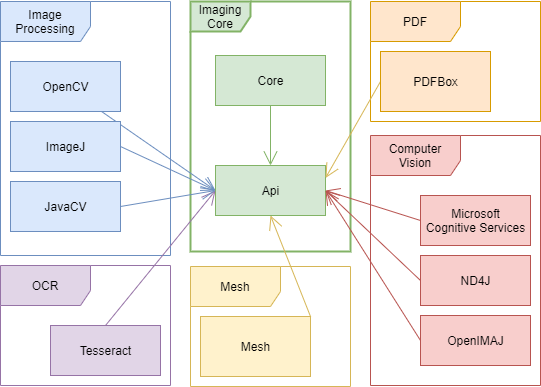
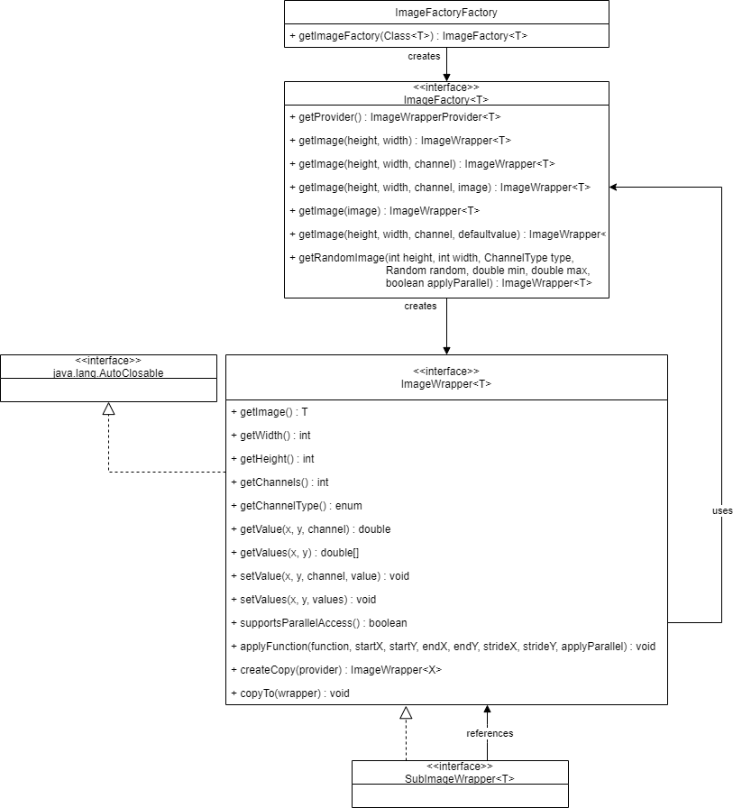

Imaging
The imaging framework provides different functionality in the context of image processing and computer vision.
Notes
The imaging project highly uses Project Lombok. So if you use IntelliJ for development, it is recommended to install the Lombok IntelliJ plugin.
- Install lombok plugin: File -> Settings -> Plugins -> Search for Lombok -> Install Lombok
- Activate Annotation Processor: File -> Settings -> Build, Execution, Deployment -> Compiler -> Annotation Processor -> Enable annotation processing
Functionality
This project provides image processing, computer vision and geometric methods. The basis is the API module which contains 2D and 3D domain classes. The lowest common denominator of those domain classes are 3D respectively 2D points.
The functionality is separated into two main modules with sub modules, described below.
- api: Is the base module of the imaging project containing domain objects for images, geometric figures (e.g. points, lines, rectangles, …), color representations and more. Also contains some further functionality as interfaces, transformers and utility classes (e.g. for type checking of images).
- core: Core consists of basic implementations for image and geometric processing. See here for a more detailed description…
- imagej: Connector module to ImageJ
- nd4j: Connector module to ND4J
- microsoftcognitiveservices: This module wraps the functionality of Microsoft´s Cognitive Services and is currently used for face detection.
- opencv: This module is the core computer vision implementation and uses the AistCV (OpenCV Java Wrapper) See here for a more detailed description…
- openimaj: Connector module to OpenIMAJ
- tesseract: This module covers OCR methods based on the javacpp wrapper of the tesseract framework.
- pdfbox: This module provides some .pdf file functionality based on org.apache.pdfbox

Image Definitions
Image wrappers
We currently have wrapper implementations for the following images, all of them can only be created using the specific ImageFactory, that are in turn obtained from typed based ImageFactoryFactory.

API Module
- ImageWrapper<Short[][][]> (Image2ByteFactory): Image type using 2-bytes per pixel. That leads to low storage requirements. Use e.g. the factory’s image provider Image2ByteFactory to create one. Note that also if the basic pixel based set/get methods are double based, the floating point precision is lost with this type of image!
- ImageWrapper<Double[][][]> (Image8ByteFactory): Image type using 8-bytes per pixel. Concern the high storage requirements - only use it if really necessary! Use e.g. the factory’s image provider Image8ByteFactory to create one.
- ImageWrapper<BufferedImage> (BufferedImageFactory): Implementation for connecting Java’s BufferedImage to our framework. Use e.g. the factory’s image provider BufferedImageFactory to create one.
Note: Usually use the Image2ByteFactory to get a 2 byte precision image (ImageWrapper<short[][][]>), the 8 byte precision image (ImageWrapper<double[][][]>) should only be used in special cases, when the floating point precision is required, because of the increased storage requirements.
OpenCV Module
- ImageWrapper<Mat> (OpenCVFactory): Represents the interface from our imaging framework to the OpenCV framework (based on the AistCV wrapper). You can also use the factory’s image provider OpenCVFactory to create one.
In addition to the base ImageWrapper there is also a SubImageWrapperclass, that represents a ROI of a referenced image.
ImageJ Module
- ImageWrapper<ImageProcessor> (ImageProcessorFactory): Wrapper implementation to ImageJ’s ImageProcessor, that supports images with 1 to 3 channels.
- ImageWrapper<ImageStack> (ImageStackFactory):: Wrapper implementation to ImageJ’s ImageStack, that are stacked ImageProcessors of same size.
ND4j Module
- ImageWrapper<INDArray> (IndArrayFactory): Wrapper implementation to ND4J’s INDArray.
OpenIMAJ Module
Image function
The API module contains the ImageFunction interface, which is considered as basis for image processing methods. Using this interface allows us to create image processing chains, which are easy to read and also more efficient (Java garbage collector is able to close resources faster), see example below. Current implementations still have to be adapted as far as possible, but this is a bit of future thinking.
// Example from the PASS project, which uses OpenCVDistanceMap implementation.
ImageFunction.closeAfterApply(openCVDistanceMap)
.compose((Function<JavaImage, ImageWrapper<Mat>>) imageTransformer::from)
.andThen(ImageFunction.closeAfterApply(GraphStructuralElementToGraphRoomTransformer::openCVDistanceMapToJava))
.apply(ji);
// Example from Image2ByteSaver
new BufferedImageSaver()
.accept(((Function<ImageWrapper<short[][][]>, ImageWrapper<double[][][]>>)transformer8ByteTo2Byte::to)
.andThen(image8ByteToBufferedImageTransformer::to)
.apply(image), fileName);
Coordinate System
In the imaging project we are using a classic image coordinate system with a top/left origin.
Color Ranges
The following color ranges are used inside the imaging project:
- binary: (0, 255)
- greyscale: (0 - 255)
- rgb/bgr: (0-255) (0-255) (0-255)
- hsv: (0.0 - 360.0) (0.0 - 1.0) (0.0 - 1.0)
- yuv: (0.0 - 1.0) (-1.0 - 1.0) (-1.0 - 1.0)
- luv: (0.0 - 100.0), (-134.0 - 220.0), (-140.0 - 122.0)
Architecture of geometric domain classes
In the Imaging project we are using a coordinate system with x-axis for width information (abscissa axis), y-axis for length information (ordinata axis) and z-axis for height information (applica axis). This can be seen in the following coordinate systems.
The base class of the geometric classes is AbstractJavaPoint with its derivates JavaPoint3D and JavaPoint2D. The JavaPoint2D hides the z-coordinate. All other geometric classes are reusing either the 3D or the 2D point respectively another class wrapping those classes. The architecture consists of abstract base classes contained in science.aist.imaging.api.domain, which are implemented for 3D purposes in science.aist.imaging.api.domain.threedimensional and for 2D purposes in science.aist.imaging.api.domain.twodimensional. All 2D domain classes end with 2D in the name and all 3D domain classes with 3D. The other main geometric classes are:
- AbstractJavaLine: Representing a line between two points
- AbstractJavaPolygon: Representing any area defined by a given line-strip
- AbstractJavaPointCloud: Representing any amount of points
Note the semantic difference between AbstractJavaPointCloud and AbstractJavaPolygon, where the first one represents any unordered amount of points, and a polygon represents an ordered list of points, which are connected defined by the order.
All geometric domain classes are rich classes with different functions and are unmodifiable.
The rough architecture (without the domain functions) of the most important domain classes looks like: